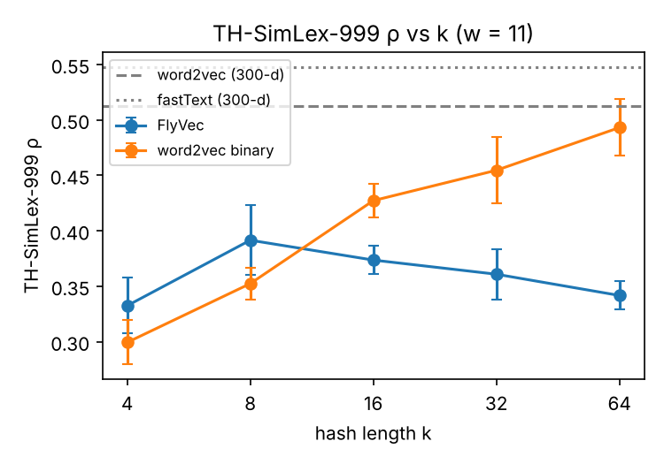

แมลงวันอ่าน ภาษาไทยได้ไหม?
Thai FlyVec: Sparse Binary Word Embeddings for Thai
CS374 การประมวลภาษาธรรมชาติ ภาค 1/2569
นำเสนอโครงงาน 19 พฤศจิกายน 2569
สหรัฐ อุดมวัฒน์ทวี 6709650680
ที่มาของโครงงาน
- word2vec / fastText: เวกเตอร์ทศนิยม 300 มิติ (คำละ 1,200 ไบต์)
- FlyVec: รหัสไบนารี 400 บิต มีเลข 1 แค่ k ตัว (คำละ 50 ไบต์)
- ได้แนวคิดมาจากวงจรรับกลิ่นในสมองแมลงวันผลไม้
- งานต้นฉบับ (Liang et al., ICLR 2021) ทดลองกับภาษาอังกฤษเท่านั้น
- ยังไม่มีใครลองกับภาษาไทย ซึ่งต้องตัดคำก่อน
2
คำถามวิจัย
- FlyVec ได้ Spearman ρ บน TH-WordSim-353 และ TH-SimLex-999 ใกล้ word2vec / fastText แค่ไหน
- เมื่อใช้จำแนกความรู้สึก (wisesight) ความแม่นยำลดลงเท่าไร เทียบกับหน่วยความจำและเวลาเทรนที่ประหยัดได้
- ความยาว hash k เท่าไร (4, 8, 16, 32, 64) เหมาะกับภาษาไทย
3
FlyVec ทำงานอย่างไร
input (40,000 มิติ) → Kenyon cells (400 เซลล์) → เลือก top-k → hash 400 บิต
- input: ครึ่งแรกคือคำบริบท 20,000 มิติ ครึ่งหลังคือคำเป้าหมาย 20,000 มิติ (0/1)
- Kenyon cell แต่ละเซลล์มีน้ำหนักต่อ input ทุกตัว
- APL neuron ยับยั้ง ให้เหลือเฉพาะ k เซลล์ที่ถูกกระตุ้นมากที่สุด
- คำที่อยู่ในบริบทคล้ายกัน จะได้บิตที่เป็น 1 ซ้อนกันมาก
สมองแมลงวัน ติดไฟแค่ k ดวง
4
input และกฎการเรียนรู้
ตัวอย่างหน้าต่าง w = 5: แมว ชอบ [กิน] ปลา ทู
บริบท = {แมว, ชอบ, ปลา, ทู} เป้าหมาย = กิน
- เลือกเซลล์ผู้ชนะ: μ* = argmax <W_μ, v>
- ปรับน้ำหนักผู้ชนะ: ΔW = v/p − <W, v/p> W (p = ความถี่คำ)
- hash ของคำ: เปิดเฉพาะครึ่งเป้าหมาย แล้วให้ top-k เซลล์เป็น 1
เปลี่ยน k ได้โดยไม่ต้องเทรนใหม่
5
การเตรียมข้อมูลภาษาไทย
- ตัดคำด้วย PyThaiNLP (newmm)
- ตัดประโยคที่ขึ้นบรรทัดใหม่ และที่ช่องว่างซึ่งมีอักษรไทยทั้งสองข้าง
- ล้าง wiki markup, แปลงเลขไทยเป็นอารบิก, ลดอักษรซ้ำ ("มากกกก" → "มาก")
- คลังศัพท์ 20,000 คำ ใช้ชุดเดียวกันทุกโมเดล
คลังข้อความ (Thai Wikipedia): 22,475 บทความ, 10.0 ล้านโทเคน, 1.67 ล้านประโยค, โทเคนนอกคลังศัพท์ 5.7%
แมลงวัน
อ่าน
ภาษา
ไทย
ตัดคำ
ฉับ ฉับ!
6
ขั้นตอนการทำงาน
- เก็บข้อมูล: Thai Wikipedia, ชุดทดสอบ, wisesight
- ล้างข้อความ ตัดคำ สร้างคลังศัพท์
- สร้างหน้าต่างบริบท + คำเป้าหมาย (w = 5, 11, 15)
- เทรน FlyVec (NumPy, K = 400, 3 epoch)
- เทรน baseline: word2vec, fastText (gensim, 300 มิติ) และ word2vec ไบนารี
- ประเมินผล
- ทำตารางและกราฟ
- demo ด้วย Streamlit
7
การ implement
- เขียนกฎการเรียนรู้ของ FlyVec ด้วย NumPy ร่วมกับ Claude
- เก็บหน้าต่างเป็นดัชนีคำ (n, w) แทนเวกเตอร์ 40,000 มิติ ผลเท่าเดิม ใช้หน่วยความจำน้อยกว่ามาก
- เทรนเป็น mini-batch ละ 1,024 หน้าต่าง, learning rate ลดเชิงเส้นจาก 0.3 ถึง 0
- ใช้ cosine กับทุกโมเดล (สำหรับรหัสไบนารี cosine = overlap / k)
- ขนาดตอนใช้งาน: FlyVec ≈ 1 MB, word2vec ≈ 23 MB (20,000 คำ)
- มีชุดเทสต์ (pytest) และ CI บน GitHub Actions
เขียนกับ Claude ด้วย NumPy
8
หัวใจของโค้ด (ย่อ)
1. เรียนจากหนึ่งหน้าต่าง
# v = หน้าต่างคำแบบ 0/1 ยาว 40,000 ช่อง W = น้ำหนัก 400 เซลล์
act = W @ v # ทุกเซลล์ตอบสนองแค่ไหน
win = act.argmax() # ผู้ชนะ 1 ตัว
x = v / p # คำที่เจอบ่อย น้ำหนักน้อยลง
W[win] += lr * (x - (W[win] @ x) * W[win]) # ขยับผู้ชนะเข้าหาประโยค
2. สร้างรหัสของคำ
act = W[:, V + word] # เปิดเฉพาะคำเป้าหมาย
code[argsort(-act)[:k]] = 1 # k เซลล์ที่สว่างสุด = 1
3. วัดความคล้าย
# นับหลอดที่ติดตรงกัน
overlap = (code_a & code_b).sum()
ย่อจาก src/thai_flyvec/flyvec.py · ของจริงทำทีละ 1,024 หน้าต่าง เก็บแบบ sparse และ learning rate ลดลงจนเป็น 0
9
การประเมินผล
| ด้าน | ชุดข้อมูล | ตัวชี้วัด |
|---|
| ความคล้ายของคำ | TH-WordSim-353, TH-SimLex-999 | Spearman ρ, สัดส่วน OOV |
| จำแนกความรู้สึก | wisesight (4 คลาส) | accuracy, macro-F1 |
| ทรัพยากร | คลังข้อความเดียวกัน | เวลาเทรน, ขนาดโมเดล |
- w = 5, 11, 15 และ seed 0, 1, 2 (9 รอบต่อโมเดล), k = 4, 8, 16, 32, 64
- ทุกโมเดลใช้คลังข้อความ คลังศัพท์ หน้าต่าง และ epoch เดียวกัน
- มี word2vec ไบนารี (top-k = 1) ที่ k เดียวกัน เพื่อเทียบกับ FlyVec
แมว
หมา
≈ ?
ใกล้กันแค่ไหนนะ
10
สรุปงานที่ทำ
เสร็จแล้ว
- โค้ดครบทั้ง 8 ขั้น พร้อมเทสต์
- ดาวน์โหลดและตัดคำคลังข้อความจริง 10 ล้านโทเคน
- รันการทดลองครบ 9 ชุด (w = 5, 11, 15 × 3 seed)
- ปรับ learning rate บนคลังจริง ได้ 0.3 แล้วรันการทดลองใหม่
- เทรน FlyVec เร็วขึ้นราว 5 เท่า (57 → 7 นาที ที่ w = 11)
- รายงานตอบคำถามวิจัย 3 ข้อ (docs/report.md)
ยังไม่ได้ทำ
- ลอง learning rate ที่ต่ำกว่า 0.3
- ขยายคลังข้อความ และเทรนด้วยหลายคอร์หรือ GPU
11
การเลือก learning rate
ทดลองบนคลังข้อความจริง w = 11, 3 seed (ρ เฉลี่ยทุก k ± SD)
| learning rate | ρ WordSim | ρ SimLex |
|---|
| 0.3 | 0.405 ± 0.015 | 0.360 ± 0.008 |
| 1.0 | 0.357 ± 0.011 | 0.321 ± 0.020 |
| 3.0 | 0.295 ± 0.023 | 0.282 ± 0.018 |
- ข้อมูลเล็ก (wisesight ~0.5 ล้านโทเคน) เคยชี้ว่า 1.0 ดีที่สุด แต่บนคลังจริง 0.3 ดีกว่าทุก seed
- ลองเพิ่มที่ 0.1 และ 0.03 (seed เดียว) แย่กว่า 0.3 ทั้งคู่ 0.3 จึงเป็นจุดที่ดีที่สุด
- macro-F1 ต่างกันไม่เกิน 0.002 งาน sentiment ไม่ไวต่อ learning rate
12
ผลการทดลองบนคลังข้อความจริง
| โมเดล | ρ SimLex | ρ WordSim | F1 ความรู้สึก | ขนาดตอนใช้ | เวลาเทรน |
|---|
| FlyVec (k = 32) | 0.361 ± 0.022 | 0.439 ± 0.017 | 0.422 ± 0.006 | 0.95 MB | 6.8 นาที |
| word2vec ไบนารี (k = 32) | 0.455 ± 0.030 | 0.496 ± 0.010 | 0.412 ± 0.018 | 0.72 MB | 2.1 นาที |
| word2vec | 0.513 ± 0.002 | 0.590 ± 0.005 | 0.425 ± 0.003 | 23.6 MB | 2.1 นาที |
| fastText | 0.548 ± 0.001 | 0.652 ± 0.005 | 0.424 ± 0.003 | 252.5 MB | 4.1 นาที |
w = 11, ค่าเฉลี่ย ± SD ของ 3 seed, lr = 0.3 · ρ คิดบนคู่คำที่ทุกโมเดลรู้จัก (SimLex 743 คู่, WordSim 212 คู่) · F1 = macro-F1 บน wisesight test
- ความคล้ายของคำ: ρ ที่ดีที่สุดของ FlyVec คิดเป็นราว 74–76% ของ word2vec (84–86% ที่ w = 5)
- จำแนกความรู้สึก: สูสี macro-F1 ต่างจาก word2vec 0.003 ซึ่งน้อยกว่า SD
- รหัส FlyVec เล็กกว่า word2vec 24.8 เท่า แต่เทรนนานกว่า 1.7–4.6 เท่า (NumPy 1 คอร์ เทียบ gensim 4 คอร์)
สู้ต่อ!
ρ WordSim
FlyVec
w2v
fastText
13
ความยาว hash k
- รหัสสั้น (k ≤ 8): FlyVec ชนะ word2vec ไบนารี เช่น 0.392 เทียบ 0.352 ที่ k = 8
- รหัสยาว (k ≥ 16): word2vec ไบนารีดีกว่า และเพิ่มขึ้นตาม k
- FlyVec สูงสุดที่ k = 8–32 แล้วลดลงที่ k = 64
- macro-F1 เพิ่มจาก k = 4 ถึง 16 แล้วคงที่
ข้อเสนอแนะสำหรับภาษาไทย: k = 16–32

ρ บน TH-SimLex-999, w = 11, ค่าเฉลี่ย ± SD ของ 3 seed
14
ปัญหาที่พบ
- download.pytorch.org ถูกบล็อก → ติดตั้ง torch จาก PyPI แทน รันบน CPU
- สคริปต์ตั้งค่า environment หา requirements.txt ไม่เจอ → ใส่ repo แล้ว ติดตั้งได้
- WangchanBERTa base ทาย mask ผิด → ใช้ตัว finetuned หรือลอง xlm-roberta-base
- learning rate ไวต่อข้อมูล → ปรับบนคลังจริง ได้ 0.3 แล้วรันใหม่
- fastText โมเดลใหญ่ ~2.4 GB ต่อรอบ → ลด n-gram bucket เหลือ 200,000
DEBUG
!!
เดี๋ยวๆ ไม่ใช่ bug ตัวนั้น!
16
ข้อจำกัด
- เลือก learning rate ด้วยชุดทดสอบเดียวกับที่รายงาน (ไม่มีชุด validation) และค่าที่ต่ำกว่า 0.3 ลองเพียง seed เดียว
- เวลาเทรนเทียบตรงไม่ได้: NumPy 1 คอร์ เทียบ gensim (C, 4 thread)
- ชุดทดสอบความคล้ายแปลจากภาษาอังกฤษ คู่คำ 26–40% อยู่นอกคลังศัพท์
- มีเพียง 3 seed และไม่ได้ทดสอบนัยสำคัญทางสถิติ
- ใช้คลังข้อความเดียว (Thai Wikipedia 10 ล้านโทเคน)
- งาน sentiment ใช้ค่าเฉลี่ยเวกเตอร์คำ ไม่ไวต่อคุณภาพของ embedding
ความต่างที่อยู่ภายใน SD จึงไม่ควรตีความว่าต่างกันจริง
17